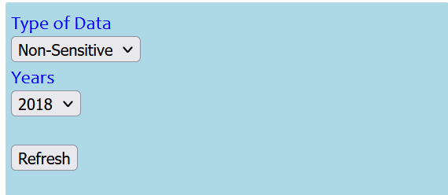
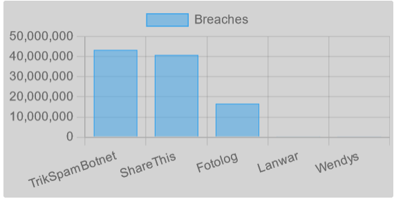
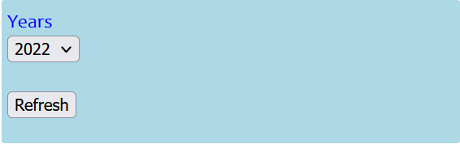
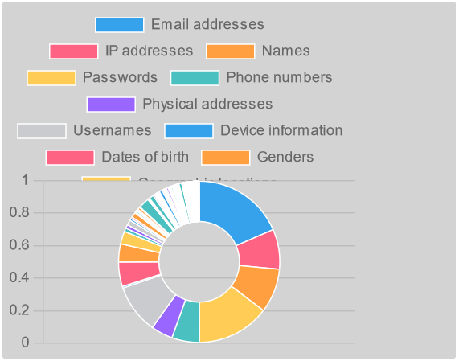

ABOUT
What is the purpose of Data Breach Visualizer?
The purpose of Data Breach Visualizer is to provide the history
of websites’ breaches that have occurred in order to help
people in their decision making. The first graph shows the
number of account breaches for some websites generated randomly
, they can be filtered based on the sensitivity and the year in
which it occurs. Moreover, the second graph provides a
summary of breaches for each year, and it includes the proportion
dataclasses involved in the breach. For example, the number of
passwords breached in 2021, and so on
Where is the data from?
The data used for this visualization is from the list of Postman
OpenAPI which can be found here
How to Use
Number of Accounts Breached per Company


It is simple to use the visualizations. The chart generates 100 random
data point from the API and among those 100 endpoints.For the first graph,
there are two dropdown menus, and the first one let you select
"sensitive" or "non-sensitive" information, the second let you
pick the year which automatically update the chart based on both
conditions(sensitivity and year). In the case you see a blank
chart, that means there is no data returned, and you should update
the filters. Finally, the refresh button allows to get fresh
data and reinitialize the state of the chart.
Number of Breaches related to Dataclasses


This second chart known as doughnt chart is simple to use. It
displays the frequency of each dataclass like passwords, emails,
and IP addresses. The chart reads its data from the API and store
it into localstorage for a better user experience.
There are one dropdown menu which let you
pick the year which automatically update the chart.
Finally, the refresh button allows to get fresh
data and reinitialize the state of the chart.